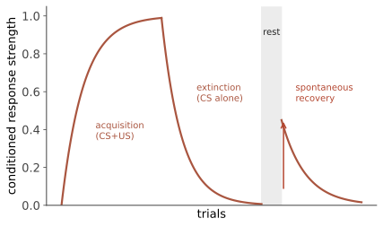

认知 II · 学习
学习 = 经验导致的行为或知识的相对持久变化。本页讲两套基本机制（经典条件反射、操作性条件反射）与一套认知补充（观察学习）。这是全课【稳】结论密度最高的一页——行为主义的实验遗产经受住了复现危机的检验，尽管它对"心智"的否认早已被抛弃。
1. 经典条件反射（巴甫洛夫）
结构：中性刺激（铃）与无条件刺激 US（食物）反复配对 ⇒ 铃变成条件刺激 CS，单独引发条件反应 CR（唾液）。
基本律【稳】：获得（CS 略先于 US、间隔短最有效）、消退（CS 不再跟随 US ⇒ CR 减弱）、自发恢复（休息后 CR 部分回来——消退不是抹除，是学到了新的抑制，这条对理解复发至关重要）、泛化与辨别。

从"配对"到"预测"（Rescorla–Wagner，本节的理论高峰）：只有 CS 提供信息（预测 US）时学习才发生——阻断效应（已有可靠预测者时，新增线索学不到东西）证明大脑学的是惊讶度：
——误差驱动学习。🔗 这个式子与强化学习的 TD 误差、与神经上的多巴胺奖赏预测误差（第 04 页）是同一个思想的三处独立发现，也是心理学对 AI 最直接的一次贡献（ai 站/数学站 MDP 线）。
人类现场：恐惧条件反射（小 Albert 实验——伦理上今天绝不可能通过审查；恐惧症的部分成因）、味觉厌恶（Garcia 效应：一次配对、长延迟也能学会——说明学习有生物预备性，不是白板，这是对行为主义"任意联结"假设的重要修正）、广告把产品与愉悦刺激配对、化疗患者的预期性恶心。
2. 操作性条件反射（Thorndike → Skinner）
效果律：行为的后果决定其未来频率。四象限（"正/负"= 给予/移除，不是"好/坏"——最常见的术语错误）：
| 增加行为 | 减少行为 | |
|---|---|---|
| 给予刺激 | 正强化（表扬） | 正惩罚（挨骂） |
| 移除刺激 | 负强化（关掉刺耳警报、逃避焦虑） | 负惩罚（没收手机） |
强化程序【稳】：连续强化学得快、消退也快；部分强化更抗消退——其中可变比率程序（VR）产生最高最稳的反应率：老虎机、抽卡、社交媒体的下拉刷新用的都是它（🔗 这是行为科学被产品设计吸收得最彻底的一条，也是"成瘾式设计"伦理争论的技术核心）。
塑造（shaping）：强化逐步逼近目标的行为——动物训练、康复训练、技能教学的通用方法。
惩罚的四个问题【稳】：只抑制不教替代行为、易引发恐惧与回避（含对施罚者）、示范攻击、依赖施罚者在场。结论：强化替代行为 > 惩罚问题行为——这在育儿与管理上是证据最扎实的建议之一。
【摇】过度理由效应：外部奖励可能损害内在动机（Deci & Ryan）——真实但条件依赖：对本已有趣的任务给"控制性"奖励最伤，对无趣任务或提供"信息性"反馈则无害甚至有益。畅销书版的"奖励一定毁掉热情"过度简化了（第 13 页续）。
3. 观察学习与认知修正
Bandura 的 Bobo 娃娃【稳（现象）/【摇】（对媒体暴力的外推）】：儿童模仿观察到的攻击行为——学习不必亲历后果。但"暴力游戏导致现实暴力"的因果链在大规模研究与 meta 分析中效应很小且争议持续（2020 年代的主流结论：若有效应也远小于公众想象），这是从实验室现象外推到社会问题时最典型的过度延伸。
认知修正的三块：潜在学习（Tolman 的老鼠画认知地图——学了不等于表现）、洞察学习（Köhler 的猩猩）、生物预备性（Garcia 效应、恐惧刺激的非任意分布：怕蛇易于怕插座）。行为主义的"白板"假设由此被三面夹击——但它的方法与规律保留了下来，这是本页的元教训：一个理论的世界观可以被推翻，而它的可复现发现依然有效。
4. 学习科学的实用清单（第 09 页详展）
【稳】有效：提取练习（自测）、间隔重复、交错练习、精细加工、解释给别人听。 【摇/倒】流行但弱：重读与荧光笔（感觉流畅 ≠ 学会——流畅性错觉是学习科学的头号敌人）、学习风格匹配【倒】、"边听音乐边学更好"（依任务与音乐而定，多数复杂任务受损）。
下一页：学到的东西存在哪、为什么会忘、以及为什么"记得清清楚楚"可能完全是假的。